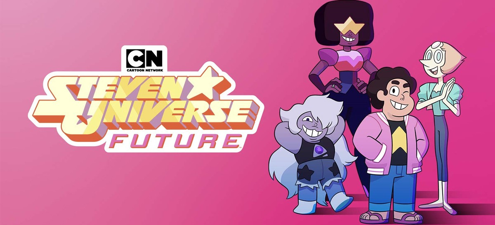

STEVEN UNIVERSE FUTURE
Año: 2019
Creador: Rebecca Sugar
Edades: Todo público
Género: Fantasía
Puntuación
Reseña
Tras salvar al mundo, Steven debe seguir
ocupándose de los problemas ajenos. Sin embargo,
pronto descubre que tendrá que ocuparse de los suyos.
Acosado por el pasado y perdido en el presente, Steven comienza
a manifestar poderes nuevos e incontrolables que las
gemas de cristal nunca antes habían visto de él.
Comentarios
Su nombre
Comentario
Comentar
Regresar